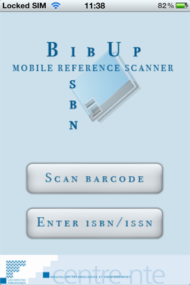
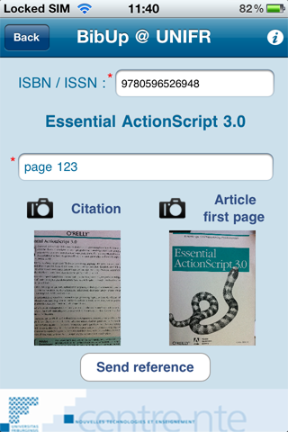
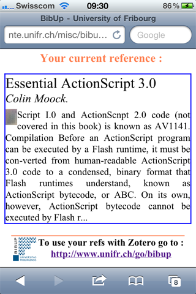
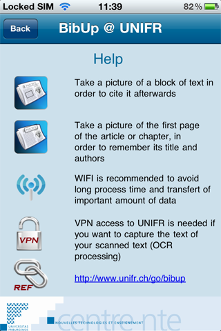
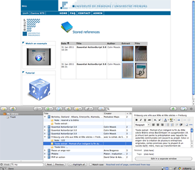

Applications ordiphones
|
|||||||


BibUp, 31 janvier 2011
Dans le cadre du projet prioritaire 2010, le Centre NTE a développé une application iPhone, BibUp, dans le but de simplifier le relevé des notices et références bibliographiques. Finies donc les prises de notes à la va vite sur un coin de papier et les références qui se perdent aux tréfonds des documents.
Bibup innove en intégrant : le scan d’un code barre ISBN (International Standard Book Number) ;
le scan d’un code barre ISBN (International Standard Book Number) ; l’image d’une citation, d’un article ou d’une revue ;
l’image d’une citation, d’un article ou d’une revue ; un OCR (Optical Character Recognition) de la citation (seulement pour les personnes connectées sur le réseau de l’Université) ;
un OCR (Optical Character Recognition) de la citation (seulement pour les personnes connectées sur le réseau de l’Université) ; l’incorporation automatique des références dans Zotero.
l’incorporation automatique des références dans Zotero.
Grâce à BibUp l’accès aux références se fait très simplement et automatiquement au moyen d’un iPhone. Une fois les références stockées dans Zotero (module complémentaire de Firefox), elles peuvent être très facilement insérées dans un logiciel de traitement de texte.
Toutes les références envoyées par BibUp sont stockées à l’adresse : http://www.unifr.ch/go/bibup
http://www.unifr.ch/go/bibup
L’application BibUp est disponible sur l’Apple Store et sur Google Play
Bibup en quelques images :
A. Page d’accueil
La page d’accueil permet de choisir le mode de saisie du code ISBN (saisie automatique avec scanner ou manuelle)

B. Page principale
Cette page permet de spécifier plusieurs informations : Un ISBN, qui permet d’obtenir automatiquement le titre du livre ou de la revue.
Un ISBN, qui permet d’obtenir automatiquement le titre du livre ou de la revue. Un espace pour la saisie d’une note (par exemple un numéro de page ou un mot clé).
Un espace pour la saisie d’une note (par exemple un numéro de page ou un mot clé). Une citation, qui sera envoyée au système d’OCR.
Une citation, qui sera envoyée au système d’OCR. Une image de la première page de l’article ou du livre (afin de conserver le titre de l’article et les auteurs par exemple).
Une image de la première page de l’article ou du livre (afin de conserver le titre de l’article et les auteurs par exemple).

C. Aperçu de la référence et de l’OCR
Cette page affiche le résultat de la référence envoyée, avec le texte reconnu par l’OCR.

D. Aide
Cete page présente un aide-mémoire des différentes fonctionnalités de l’application.

E. Intégration à Zotero
Cette page contient la liste complète de toutes les références envoyées par l’application. Depuis cette page, il est possible d’insérer automatiquement les références désirées dans son espace personnel Zotero.

Tutoriels
Remarques
 Seules les personnes inscrites à l’Université de Fribourg peuvent utiliser le reconnaissance de caractères (connexion VPN au besoin).
Seules les personnes inscrites à l’Université de Fribourg peuvent utiliser le reconnaissance de caractères (connexion VPN au besoin).  Une connexion WIFI est vivement conseillée. En effet, une connexion 3G ou autre peut techniquement être suffisante. Toutefois, le poids des données à transmettre pour la reconnaissance de texte pouvant aller jusqu’à trois ou quatre Mégas, l’opération pourrait s’avérer coûteuse et longue.
Une connexion WIFI est vivement conseillée. En effet, une connexion 3G ou autre peut techniquement être suffisante. Toutefois, le poids des données à transmettre pour la reconnaissance de texte pouvant aller jusqu’à trois ou quatre Mégas, l’opération pourrait s’avérer coûteuse et longue. La qualité de l’appareil photo de l’iPod Touch n’est souvent pas suffisante pour reconnaître les codes barre ISBN.
La qualité de l’appareil photo de l’iPod Touch n’est souvent pas suffisante pour reconnaître les codes barre ISBN.
|
BibUp |
|||||||
|
BoGart |
|||||||